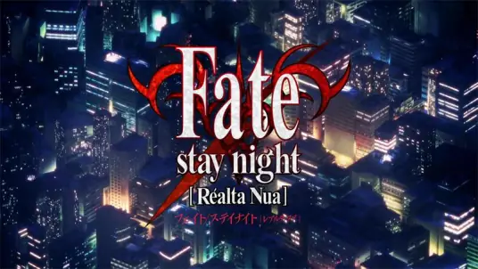

《Fate/stay night》是TYPE-MOON开发并最早于2004年1月30日在PC平台上发售的文字冒险游戏，也是TYPE-MOON公司商业化后初次亮相的作品，是Fate的系列作品之一，游戏平台为PC、PS2、PS Vita。2024年8月7日，游戏重制版上架Steam，售价108元。
《Fate/stay night》中玩家扮演卫宫士郎，一个偶然与剑士Servant（Saber）签订契约的魔术师，参与争夺能实现任何愿望的圣杯的战争。游戏中有七位Master和他们的Servant，每个Servant属于不同的职阶。玩家的选择会影响剧情走向，游戏拥有三条主线，每条线都提供了不同的角色互动和故事结局。
于2006年由Studio DEEN改编制作为同名电视动画《fate 06》，以原作的Fate路线为主，并穿插其他两线的部分内容，于2006年1月6日播放至2006年6月16日，共24话，已完结。
游戏及动画作品《Fate/stay night》的前传,由日本作家虚渊玄著作，全4卷（文库版为6卷）,该作品亦改编成同名电视动画《Fate/Zero》，讲述的是第四次圣杯战争时的故事。
于2014年由ufotable以原作的Unlimited Blade Works路线改编制作为电视动画《Fate/stay night》[Unlimited Blade Works]，于2014年10月开始播放，共两季，全26话，已完结。
由ufotable以原作的Heaven's Feel路线改编制作为剧场版动画《Fate/stay night》 [Heaven's Feel]，于2017年10月14日开始上映，全三章。
《卫宫家今天的饭》改编自TAa创作的同名漫画作品，由ufotable负责制作。动画第1话于2017年12月31日在“Fate Project 大晦日 TV Special 2017”先行放送，于2018年1月25日正式在AbemaTV发布。
改编自TYPE-MOON发行的同名游戏《Fate/Grand Order》的电视动画，由Lay-duce制作，难波日登志担任导演，剧情改编自游戏主线故事·第一部·序章，于2016年12月31日在TOKYO MX、NicoNico动画等电视台及视频网站播出。电视动画《Fate/Grand Order -绝对魔兽战线巴比伦尼亚-》于2019年10月5日发送。